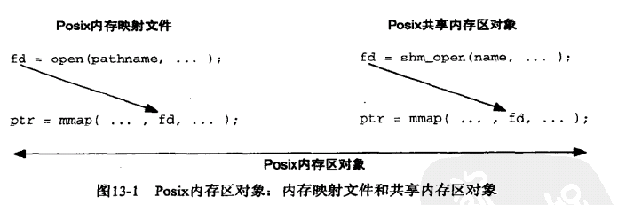

linux进程间通讯
信号
信号的机制
信号的忽略、捕捉和屏蔽
什么是未决信号集，以及进程的信号集如何处理
概念
阻塞信号集：当属于阻塞信号集的信号A来临时，进程并不会处理。只有信号A阻塞解除时，原先到来的信号A才会被处理。相当于一直阻塞不处理。 未决信号集：当前进程未处理的信号
信号特性
- 一个进程对应一个PCB，PCB中存在信号屏蔽字A，决定了进程屏蔽那些信号，当进程接收到某个信号后调用相应的信号处理函数，此时进程的信号屏蔽字不再是PCB中的A，而是此信号函数中
sa_mask决定 - 在信号A的捕捉函数执行期间，信号A会被自动屏蔽
- 阻塞信号不支持排队，产生多次只记录一次。实时信号支持排队（阻塞信号的信号值为1-31，实时信号的信号值为32-64）(阻塞信号与不可靠信号同义，可靠信号与实时信号同义)
信号处理时机
当进程唤醒或者调度后获取CPU，则会从内核态转到用户态时检测是否有signal等待处理，处理完，进程会把相应的未决信号从链表中去掉。
信号的处理时机在内核态转向用户态的过程中，故处理流程如下：
内核态 --> signal信号处理 --> 用户态
信号的处理方式有三种
- 默认处理：使用默认行为处理
- 自定义：利用自定义信号处理函数执行
- 忽略：接收后不做任何反应 ### 如何忽略信号
1
2
3
4sighandler_t signal(int signum, sighandler_t handler);
// 参数：
// signum： 信号
// handler：处理动作，传SIG_IGN表示忽略
处理信号的函数
1 | int sigaction(int signum, const struct sigaction *act, struct sigaction *oldact); |
可以看到处理函数中需要用sigaction结构体，sigaction结构体个数如下：
1 |
|
处理进程的信号集
主要包括设定阻塞信号集和读取未决信号集。 1. 设定阻塞信号集：
1
2
3
4
5int sigprocmask(int how, const sigset_t *restrict set, sigset_t *restrict oset);
how： 假设当前屏蔽的信号屏蔽字符为 mask；
SIG_BLOCK: 相当于 mask = mask | set (set 为需要屏蔽的信号集)
SIG_UNBLOCK： 相当于 mask = mask & ~set (set 为需要解除屏蔽的信号集)
SIG_SETMASK： 相当于 mask = set (set 为用于替代原始屏蔽集的新屏蔽集)
1 | int sigpending(sigset_t *set); |
如何绑定信号处理函数
sa_handler：指定信号捕捉后的处理函数名(即注册函数)。也可赋值为SIG_IGN表忽略
或 SIG_DFL表执行默认动作
如何设定处理函数的信号屏蔽字
1 | sigemptyset(sigset_t *set); //：信号集全部清0； |
如何发送信号
1 | kill()：用于向进程或进程组发送信号； |
示范
1 |
|
接受信号的进程如何查看发送方的pid
接受信号的一方可以通过回调函数查看发送信号的进程pid，这种方法使得进程可以使用信号互相交流，而不是单方面的传递信息。
关键点是使用sa_sigaction接收函数。 1
2
3
4
5
6
7
8
9
10
11
12
13
14
15
16
17
18
19
20
21
22
23
24
25
26
27
28
29
30void signal_handler(int signum, siginfo_t *info, void *context) { // 得到相应发送信号的进程号
printf("Received signal %d from process %ld\n", signum, (long)info->si_pid);
}
int main() {
struct sigaction sa;
sa.sa_flags = SA_SIGINFO;
sa.sa_sigaction = signal_handler;
sigemptyset(&sa.sa_mask);
if (sigaction(3 , &sa, NULL) == -1) {
perror("sigaction");
exit(EXIT_FAILURE);
}
int id;
pid_t father_pid = getpid();
printf("%d\n",father_pid);
for(int i = 0;i < 1;i++){
id = fork();
if(id != 0)break;
}
if(id != 0){
//printf("%d\n",father_pid);
kill(father_pid,3);
// 进行处理
}
// Wait for a signal
pause();
return 0;
}
共享内存
两种共享内存的机制
两种共享内存 文件映射和共享内存
多进程使用文件映射实现共享内存功能
现代linux中存在两种共享内存的机制 1.
POSIX共享内存(shm_open()、shm_unlink())，需要结合mmap使用
2. System V共享内存(shmget()、shmat()、shmdt())
两种机制都能实现共享内存的基本功能，区别在于 1. System V共享内存是持久的，如果程序中不进行明确的删除则会永久留在内存里，知道系统关机 2. mmap映射的内存在不是持久化的，假如进程关闭，映射随即失效，除非事前已经映射到了一个文件上。
如何创建共享内存和文件映射

1.
内存映射文件，由open函数返回文件描述符，再由mmap将文件映射到当前进程空间地址中的文件。多个进程可对一个文件进行映射，可进行进程间的通信。文件映射实现进程间通讯
具体的设置还得看代码才能理解，这里对代码进行注释，给出各个参数的含义
1
2
3
4
5
6
7
8
9
10
11
12
13
14
15
16
17
18
19
20
21
22
23
24
25
26
27
28
29
30
31
32
33
34
35
36
37
38
39
40
41
42
43
44
45
46
47
48
49
50
51
52
53
54
55
56
57
void read_(){
int fd = open("./input",O_RDWR,0777);
int len = lseek(fd,0,SEEK_END);
// 所有文件打开都有一个文件偏移量(cfo, current file offset)，表示文件开头到当前读写位置的字节数，是一个非负整数。所有文件读写都从cfo开始,每次读写都会使cfo增大读写字节数，
// off_t lseek(int fd, off_t offset, int whence);
// offset设置打开的文件偏移位置，返回值是指针相对于文件开头的偏移量，也就是移动后的指针位置。
// whence 表示偏移量相对哪里来说，用于表示offset的处理方式
// 1. SEEK_END表示，文件偏移量cfo = 文件总长度 + offset
// 2. SEEK_CUR表示，文件偏移量cfo = 当前文件偏移量 + offset
// 3. SEEK_SET表示，文件偏移量cfo = offset
char *buffer1 = (char *)mmap(NULL, len, PROT_READ|PROT_WRITE, MAP_SHARED, fd, 0);
// void *mmap(void *addr, size_t length, int prot, int flags,int fd, off_t offset);
// 1. addr是一个映射地址，这个地址只是建议内核这么做，内核具体做法要经过实际判断（如当前位置是否存在映射、是否为页边界等）给出映射地址，如果为NULL的话，则内核自行分配映射地址。
// 2. length和offset表示了文件映射范围，设开始处为0，那么映射范围为[offset, offset + length], offset必须为页大小的整数倍
// 3. prot 表示映射区的保护方式，即可对映射区域做怎样的操作，有如下选项
// 1. PROT_EXEC： 映射区可被执行
// 2. PROT_READ： 映射区可被读取
// 3. PROT_WRITE： 映射区可被写入
// 4. PROT_NONE： 映射区不能存取
// 4. flag表示映射区域的特性
// 1. MAP_SHARED： 对映射区域的写入数据会复制回文件, 且允许其他映射该文件的进程共享
// 2. MAP_PRIVATE： 对映射区域的写入操作会产生一个映射的复制(copy-on-write), 对此区域所做的修改不会写回原文件。
// 5. fd： 由open返回的文件描述符, 代表要映射的文件
// 函数失败返回-1 MAP_FAILED( (void *) -1),成功返回映射区域
printf("first = %s\n",buffer1);
sleep(1);
printf("second = %s\n",buffer1);
munmap(buffer1,len); // 为防止内存泄漏，应手动将映射释放掉, 成功返回0，失败返回-1
}
void write_(){
int fd = open("./input",O_RDWR,0777);
char data[100] = "safssajhfjasfhgjsdgj";
lseek(fd,(strlen(data) - 1) * sizeof(char),SEEK_END);
write(fd, " ",1);
sleep(1);
char *buffer1 = (char *)mmap(NULL, strlen(data) * sizeof(char), PROT_READ|PROT_WRITE, MAP_SHARED, fd, 0);
memcpy(buffer1,data,strlen(data) * sizeof(char));
munmap(buffer1, strlen(data) * sizeof(char ));
}
int main()
{
pid_t pid = fork();
if(pid == -1){
perror("创建进程出错\n");
}
if(pid == 0)read_();
else write_();
return 0;
}1
2
3
4
5skt1faker@nwpu ~/rm
$ ./a.out [21:07:00]
first =
second = safssajhfjasfhgjsdgj
- 共享内存
实现方法和上面依旧一样，只不过将
open函数使用shm_open代替, 并且存在一些注意的点
- mmap映射长度必须大于一个页大小，否则会出现bus error
- A、B两进程都是用同一共享内存，但A进程将内存munmap后B进程依旧可以使用。可见下代码
- 由于mmap不能改变文件大小，所以最初文件大小应使用ftruncate(fd,length)进行设定
- 映射文件名不能带有路径，如"./input"或"/home/skt1faker/ff",只能为"input",
原因与tmpfs文件系统有关，tmpfs将所有文件放在虚拟内存中，并不放在磁盘上，在实现POSIX共享内存时，会预设tmpfs文件系统挂载在/dev/shm/，
open_shm实现时open_shm给出的文件路径和/dev/shm进行拼接，所以给出open_shm中的文件名路径应为相对路径，并且在/dev/shm下。如shm_open("./haha/sss",O_CREAT|O_TRUNC|O_RDWR,0777);必须存在/dev/shm/haha - 共享内存使用链接库rt，编译选项中加入-lrt即可
O_TRUNC选项只在创建共享内存文件时使用，如果打开则不可使用此选项，会造成打开前其他进程写入内容的清空
1 |
|
程序输出为 1
2
3
4
5
6
7skt1faker@nwpu ~/rm
$ gcc a.cpp -g -o test -lrt && ./test
first =
write munmap
second = safssajhfjasfhgjsdgj
read munmap
(homework)
信号量
工作方式
信号量作用为同步，而不是传递信息，信号的工作方式如下： 1. 当信号量值为0时，试图对信号量-1的进程会阻塞 2. 当信号量大于0时，试图对信号量+1的进程会阻塞
主要使用三种函数：
1. int sem_wait(sem_t *sem)： -
如果信号量值*sem > 0，则sem_wait会立即返回,
并将*sem - 1。 -
如果*sem == 0，则sem_wait()会阻塞至信号量大于0。
- 返回值0表示成功，-1表示失败
int sem_post(sem_t *sem)：
- 以原子操作的形式将信号量值+1
- 返回值0表示成功，-1表示失败
int sem_destory(sem_t * sem);：
- 该函数对用完的信号量进行清理
- 返回值成功为0，失败为-1；
创建方法
进程间使用信号量通讯有两种方式 1. 匿名信号量
匿名信号量使用共享内存实现，利用mmap生成一个文件映射或者匿名映射（对应参数中fd = -1，或fd = open("/dev/zero",O_RDWR)）。生成的信号量使用sem_init初始化
1 | int sem_init(sem_t *sem, int pshared, unsigned int value); |
具体创建方式 1
2
3
4
5
6
7
8
9
10
11
12
13
14
15
16
17
18
19
20
21
22
23
24
25
26
27
28
29
30
31
32
33
34
35
36
37
38
39
40
41
42
43
44
45
int main(void)
{
sem_t *sem_id = NULL;
pid_t pid;
/*
// 不知应不应改算匿名信号量
int fd = open("./input",o_rdwr,0777);
sem_id = (sem_t *)mmap(null, sizeof(sem_t), prot_read | prot_write, map_shared | map_anonymous, fd, 0);
*/
/*
// 匿名信号量
int fd = open("/dev/zero",o_rdwr);
sem_id = (sem_t *)mmap(null, sizeof(sem_t), prot_read | prot_write, map_shared | map_anonymous, fd, 0);
*/
// 匿名信号量
//sem_id = (sem_t *)mmap(null, sizeof(sem_t), prot_read | prot_write, map_shared | map_anonymous, -1, 0);
sem_init(sem_id, 1, 1); /// 匿名信号量初始化
pid = fork();
if (pid > 0) {
while (1) {
sem_wait(sem_id); // -- 1
printf("This is Parent Process\n");
sem_post(sem_id);
sleep(1);
}
} else if (0 == -pid) {
while (1) {
sem_wait(sem_id);
printf("This is Child Process\n");
sem_post(sem_id); // -- 2
sleep(1);
}
}
return 0;
}MAP_SHARED表示多个进程共享的标记
- 命名信号量
命名信号量使用sem_open，如同打开文件一样，打开信号量。可用于创建一个信号量或打开一个已有的信号量。
1
2
3
4
5
6
7
8
9
10
11
12
13
14
15
16
sem_t *sem_open(const char *name, int oflag);
sem_t *sem_open(const char *name, int oflag,
mode_t mode, unsigned int value);
/*
name 表示信号量名字，多个进程使用同一个信号量需要将信号量名字统一。
oflag表示创建文件的行为，一般为O_CREAT，即不存在则创建，存在则直接打开。
mode表示其他组进程对信号量的访问权限
value表示信号量的初值，但是本人在实验中怎样设置都是0。
*/
Link with -pthread.1
2
3
4
5
6
7
8
9
10
11
12
13
14
15
16
17
18
19
20
21
22
23
24
25
26
27
28
29
30
31
32
33
int main(void)
{
sem_t *sem_id = sem_open("input",O_CREAT,0777,0); // 不管初值设为多少，好像信号量初始值都为0
pid_t pid;
pid = fork();
if (pid > 0) {
while (1) {
sem_post(sem_id);
printf("This is Parent Process\n");
sem_wait(sem_id); // -- 1
sleep(1);
}
} else if (0 == pid) {
while (1) {
sem_post(sem_id); // -- 2
printf("This is Child Process\n");
sem_wait(sem_id);
sleep(1);
}
}
return 0;
}
1 | // file1 |
信号量怎样作为锁
sem_wait是原子操作
信号量如何实现锁
实现锁需要原子操作，来保证上锁时锁的值不会被干扰,
使得上锁代码只能有一个进程处理，保证了原子性。
sem_wait(或sem_t *sem)相当于P操作，即申请资源。
测试所指定信号量的值,它的操作是原子的。同理int sem_post(sem_t *sem)也是原子的，可以用作锁。
由于只有sem_wait函数会发生阻塞，所以将其放在前方，保证未获取锁时阻塞。
如下所示，进程间信号的量实现的锁可如下所示:
1 |
|
上述代码中进程会交替执行，打印效果如下： 1
2
3
4
5
6
7
8
9
10
11
12
13
14skt1faker@nwpu ~/rm
$ ./a.out [16:43:26]
This is Parent Process
This is Child Process
This is Parent Process
This is Child Process
This is Parent Process
This is Child Process
This is Parent Process
This is Child Process
This is Parent Process
This is Child Process
This is Parent Process
This is Child Process
1 | // 生产者 |
进程间的锁
进程间也能拥有锁，主要使用pthread_mutex与共享内存，一半这种函数主要用于线程中的互斥，但是如果在使用中设置了PTHREAD_PROCESS_SHARED选项，那么两个进程可以使用这样的锁进行同步。